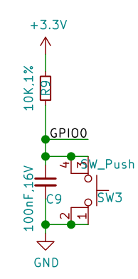

基礎功能使用
點亮板載LED燈珠
在完成MicroPython 運行環境設置後，可以立即嘗試編程。
新建一個 main.py 腳本文件，在其中輸入以下代碼：
from machine import Pin
from neopixel import NeoPixel
import time
pin_48 = Pin(48)
np = NeoPixel(pin_48, 1,bpp=3, timing=1)
while True:
np[0] = (25,25,25)
np.write()
time.sleep_ms(250)
np[0] = (0,0,0)
np.write()
time.sleep_ms(250)
保存文件到MicroPython設備中，點擊“Run”運行按鈕，即可讓板載彩色LED燈珠閃爍。
修改 np[0] = (25,25,25)等號右側元組內的數據，可以改變顏色，分別對應R，G，B三色亮度等級，設定範圍是0-255，建議使用範圍0-25，亮度過高時請勿長時間直視！
neopixel — control of WS2812 / NeoPixel LEDs — MicroPython 文檔
使彩燈循環顯示九種顏色
from machine import Pin
from neopixel import NeoPixel
import time
pin_48 = Pin(48, Pin.OUT)
np = NeoPixel(pin_48, 1,bpp=3, timing=1)
RED = (255, 0, 0)
ORANGE = (255, 100, 0)
YELLOW = (255, 255, 0)
GREEN = (0, 255, 0)
CYAN = (0, 255, 255)
BLUE = (0, 0, 255)
PURPLE = (180, 0, 255)
WHITE = (255, 255, 255)
OFF = (0, 0, 0)
color_list = [RED,ORANGE,YELLOW,GREEN,CYAN,BLUE,PURPLE,WHITE,OFF]
brightness = 0.1
while True:
for i in color_list:
color = (round(i[0]*brightness),round(i[1]*brightness),round(i[2]*brightness))
np[0] = color
np.write()
time.sleep(1)
全彩LED燈珠循環顯示彩虹色
基於上一節，我們可以更進一步，編寫循環自動改變燈珠顏色。
from machine import Pin
from neopixel import NeoPixel
import time
def rainbow(num=1,level=25,delay=100):
def write_all(num,delay,red,green,blue):
for j in range (num):
np[j] = (red,green,blue)
np.write()
time.sleep_ms(delay)
red,green,blue = level,0,0
rainbow_step_list2 = [(0,1,0),(-1,0,0),(0,0,1),(0,-1,0),(1,0,0),(0,0,-1)]
for step in rainbow_step_list2:
for i in range (level):
red+=step[0]
green+=step[1]
blue+=step[2]
write_all(num,delay,red,green,blue)
np = NeoPixel(Pin(48, Pin.OUT), 1,bpp=3, timing=1)
while True:
rainbow(num=1,level=25,delay=10)
此例程可適用於任意長度的ws2812燈帶。
修改 NeoPixel(Pin(48, Pin.OUT), 1,bpp=3, timing=1) 中第一個參數至任意想要串接燈帶的GPIO管腳。
修改 rainbow(num=1,level=25,delay=100) 中的num參數為燈帶上對應燈珠的數量。
當然我們也可以根據自己的想法使用for循環或while循環製作自己想要的顏色變化規律。
設計按鍵中斷程序,控制彩燈
BPI-Leaf-S3 有兩顆按鍵，BOOT 與 RST，RST控制芯片硬件復位，而BOOT則與GPIO0相連，其電路如下圖所示。

可見當開發板正常通電工作時，GPIO0在BOOT按鍵未按下時，串聯一顆電阻接到3.3v，此時為高電位；當BOOT按鍵按下時，GPIO0將直接接地，此時則為低電位。 ESP32-S3芯片通過檢測此GPIO管腳的電位即可判斷按鈕是否被按下。
MicroPython GPIO中斷程序 machine.Pin.irq 文檔
在程序中，通過檢測 GPIO中斷的觸發方式，即可設計一套記錄按鍵被按壓的次數的中斷程序，用判斷當前已經按壓的次數來控制彩燈的顏色。
from machine import Pin
from neopixel import NeoPixel
from array import array
import time
import micropython
micropython.alloc_emergency_exception_buf(100)
p_48 = Pin(48, Pin.OUT)
np = NeoPixel(p_48, 1,bpp=3, timing=1)
p0 = Pin(0,Pin.IN,Pin.PULL_UP)
trig_locks = array('B',[0])
trig_timeticks_list = array('L',[0,0])
count = array('L',[0])
def p0_irq(pin):
if pin.value()==0 and trig_locks[0]==0:
trig_timeticks_list[0]=time.ticks_ms()
trig_locks[0]=1
elif pin.value()==1 and trig_locks[0]==1:
trig_timeticks_list[1]=time.ticks_diff(time.ticks_ms(),trig_timeticks_list[0])
trig_locks[0]=0
if trig_timeticks_list[1] >= 20:
count[0] = count[0] + 1
if count[0] > 8:
count[0] = 0
p0.irq(handler=p0_irq,trigger= Pin.IRQ_FALLING | Pin.IRQ_RISING )
RED = (255, 0, 0)
ORANGE = (255, 100, 0)
YELLOW = (255, 255, 0)
GREEN = (0, 255, 0)
CYAN = (0, 255, 255)
BLUE = (0, 0, 255)
PURPLE = (180, 0, 255)
WHITE = (255, 255, 255)
OFF = (0, 0, 0)
color_list = [RED,ORANGE,YELLOW,GREEN,CYAN,BLUE,PURPLE,WHITE,OFF]
brightness = 0.1
while True:
print (count)
i = color_list[count[0]]
color = (round(i[0]*brightness),round(i[1]*brightness),round(i[2]*brightness))
np[0] = color
np.write()
time.sleep(0.1)
PWM 單色LED呼吸燈
外部硬件需求
一個可以在3.3v電壓下工作的LED燈。
連接方法
例程中使用的是GPIO13管腳，將LED燈正極與GPIO13管腳連接，負極與GND連接。
Code
from machine import Pin, PWM
import time
PWM_LED = PWM(Pin(13))
PWM_LED.freq(1000)
PWM_LED.duty(0)
while True:
for i in range(0,1024,1):
PWM_LED.duty(i)
time.sleep_ms(2)
for i in range(1022,0,-1):
PWM_LED.duty(i)
time.sleep_ms(1)
TB6612FNG模塊 PWM驅動電機
外部硬件需求
一個TB6612FNG模塊，一個3.3~5V直流電機。
連接方法
| TB6612FNG | BPI-Leaf-S3 |
|---|---|
| PWMA | 11 |
| AIN2 | 13 |
| AIN1 | 12 |
| STBY | 10 |
| VM | 5V |
| VCC | 3.3V |
| GND | GND |
| AO1 | 電機N極 |
| AO2 | 電機S極 |
AO1/AO2 與電機的連接可任意調換接線順序，以此改變旋轉方向。
運行效果
電機將啟動朝一個方向旋轉並在7秒逐漸加速到當前電流可達到的最大轉速，然後在5秒內逐漸減速至停轉，隨後反向旋轉並重複這個過程。
Code
from machine import Pin,PWM
import time
PWM_A = PWM(Pin(11)) #Set PWM output pin
PWM_A.freq(20000) #Set PWM frequency
PWM_A.duty(0) #Set PWM duty cycle
AIN1 = Pin(12,Pin.OUT)
AIN2 = Pin(13,Pin.OUT)
STBY = Pin(10,Pin.OUT)
STBY.on() #When STBY pin is at high level, TB6612FNG starts.
def MOTOR_Forward():
AIN1.on()
AIN2.off()
def MOTOR_Reverse():
AIN1.off()
AIN2.on()
while True:
MOTOR_Forward()
#for cycle is used to control the PWM duty cycle change.
#The PWM duty cycle control precision is 10bit, ie 0~1023.
#Some motors require a certain PWM duty cycle to start.
for i in range(350,1024,1):
PWM_A.duty(i)
time.sleep_ms(10)
for i in range(1022,0,-1):
PWM_A.duty(i)
time.sleep_ms(5)
MOTOR_Reverse()
for i in range(350,1024,1):
PWM_A.duty(i)
time.sleep_ms(10)
for i in range(1022,0,-1):
PWM_A.duty(i)
time.sleep_ms(5)
使用ADC檢測電位器電壓
外部硬件需求
一個電位器。

ESP32-S3的ADC
ESP32-S3芯片內部集成了兩個ADC模數轉換器 ，測量範圍 0mV-3100mV，分辨率為12bit，即將0mV-3100mV分為2^12=4096級，每一級為一個數字量。
兩個ADC模數轉換器各有10個測量通道，ADC1為GPIO1 ~ 10,ADC2為GPIO11 ~ 20 。
連接方法
GND接GND，VCC接3V3，S輸出端接GPIO11管腳，使用的是ADC2的通道1進行測量。
GPIO1~20管腳都可做ADC輸入管腳。
Code
from machine import Pin,ADC
import time
adc11 = ADC(Pin(11),atten=ADC.ATTN_11DB)
#adc11 = ADC(Pin(11)）
#adc11.atten(ADC.ATTN_11DB)
while True:
read=adc11.read()
read_u16=adc11.read_u16()
read_uv=adc11.read_uv()
print("read={0},read_u16={1},read_uv={2}".format(read,read_u16,read_uv))
time.sleep_ms(100)
| 衰減值 | 可測量的輸入電壓範圍 |
|---|---|
| ADC.ATTN_0DB | 0 mV ~ 950 mV |
| ADC.ATTN_2_5DB | 0 mV ~ 1250 mV |
| ADC.ATTN_6DB | 0 mV ~ 1750 mV |
| ADC.ATTN_11DB | 0 mV ~ 3100 mV |
ADC(*，atten)初始化一個GPIO管腳的ADC通道，可以選擇使用atten設定衰減值，它控制芯片可測量的輸入電壓範圍，如果不設置，將為默認值atten=ADC.ATTN_0DB或上一次所設定的值。- 可以在初始化一個ADC通道後通過
ADC.atten()修改衰減值。 ADC.read()讀取ADC並返回讀取結果，ESP32-S3芯片的ADC所返回的是12位精度的數據。ADC.read_u16()讀取ADC並將返回16位的數據。ADC.read_uv()根據ADC的特性以uV微伏為單位返回校準的輸入電壓。返回值只有mV毫伏分辨率（即，將始終是1000微伏的倍數）。
WiFi功能也使用了ADC2，因此在WiFi處於活動狀態時嘗試從ADC2的測量通道GPIO11 ~ 20讀取模擬值將引發異常。
建議使用ADC.read_uv()來讀取電壓值，它是根據ADC模數轉換器的特性經過校准後返回的十進制常數，較比另外兩個讀取方法更加準確，同時也建議使用時直接經過整除運算：ADC.read_uv()//1000 獲取mV毫伏分辨率的數據。
直接打印輸出ADC.read()或ADC.read_u16()得到的是十進制數值，可用hex()函數將數據類型轉化為十六進制，例如hex(ADC.read())，或用bin()函數將數據類型轉化為二進制。
用電位器無極調控彩燈亮度
在 使彩燈循環顯示九種顏色 小節的基礎上，可使用電位器來控制彩燈的亮度。
Code
from machine import Pin,ADC
from neopixel import NeoPixel
from array import array
import time
import micropython
adc1 = ADC(Pin(1),atten=ADC.ATTN_11DB)
micropython.alloc_emergency_exception_buf(100)
p_48 = Pin(48, Pin.OUT)
np = NeoPixel(p_48, 1,bpp=3, timing=1)
p0 = Pin(0,Pin.IN,Pin.PULL_UP)
trig_locks = array('B',[0])
trig_timeticks_list = array('L',[0,0])
count = array('L',[0])
def p0_irq(pin):
if pin.value()==0 and trig_locks[0]==0:
trig_timeticks_list[0]=time.ticks_ms()
trig_locks[0]=1
elif pin.value()==1 and trig_locks[0]==1:
trig_timeticks_list[1]=time.ticks_diff(time.ticks_ms(),trig_timeticks_list[0])
trig_locks[0]=0
if trig_timeticks_list[1] >= 20:
count[0] = count[0] + 1
if count[0] > 8:
count[0] = 0
p0.irq(handler=p0_irq,trigger= Pin.IRQ_FALLING | Pin.IRQ_RISING )
RED = (255, 0, 0)
ORANGE = (255, 100, 0)
YELLOW = (255, 255, 0)
GREEN = (0, 255, 0)
CYAN = (0, 255, 255)
BLUE = (0, 0, 255)
PURPLE = (180, 0, 255)
WHITE = (255, 255, 255)
OFF = (0, 0, 0)
color_list = [RED,ORANGE,YELLOW,GREEN,CYAN,BLUE,PURPLE,WHITE,OFF]
while True:
adc1_read = adc1.read() # 12bit
adc1_read_mv = adc1.read_uv()/1000
adc1_read_u16 = adc1.read_u16() # 16bit
brightness = adc1_read/4095
i = color_list[count[0]]
color = (round(i[0]*brightness),round(i[1]*brightness),round(i[2]*brightness))
np[0] = color
np.write()
print(adc1_read,adc1_read_u16,adc1_read_mv,"mv",count[0],color)
time.sleep(0.1)
使用ADC測量電位器，用以調整電機轉速
外部硬件需求
- 電位器 x 1
- TB6612FNG電機驅動模塊 x 1
- 5v直流電機 x 1
- 一些連接線材
連接方法
| Potentiometer | BPI-Leaf-S3 |
|---|---|
| GND | GND |
| VCC | 3V3 |
| S | 14 |
| TB6612FNG | BPI-Leaf-S3 |
|---|---|
| PWMA | 11 |
| AIN2 | 13 |
| AIN1 | 12 |
| STBY | 10 |
| VM | 5V |
| VCC | 3.3V |
| GND | GND |
| TB6612FNG | Motor |
|---|---|
| AO1 | Motor N pole |
| AO2 | Motor S pole |
運行效果
開發板將間隔100ms在REPL輸出ADC讀取到的電壓值，單位為mv，以及對應控制的PWM佔空比。
用手調整電位器，改變其輸出電壓，電壓越大，開發板輸出的PWM佔空比越高，電機轉速越快。
Code
from machine import Pin,ADC,PWM
import time
adc14 = ADC(Pin(14),atten=ADC.ATTN_11DB)
PWM_A = PWM(Pin(11)) #Set PWM output pin
PWM_A.freq(20000) #Set PWM frequency
PWM_A.duty(0) #Set PWM duty cycle
AIN1 = Pin(12,Pin.OUT)
AIN2 = Pin(13,Pin.OUT)
STBY = Pin(10,Pin.OUT)
AIN1.on() #MOTOR forward
AIN2.off()
STBY.on() #When STBY pin is at high level, TB6612FNG starts.
while True:
read_mv=adc14.read_uv()//1000
if read_mv <= 3000:
duty_set = int(1023/3000 * read_mv)
else:
duty_set = 1023
PWM_A.duty(duty_set)
Duty_cycle = int(duty_set/1023*100)
print("ADC_read={0}mv,Duty_cycle={1}%".format(read_mv,Duty_cycle))
time.sleep_ms(100)
UART 串口數據讀寫
外部硬件需求
USB轉UART模塊（CH340，CP2102等）。
軟件需求
一個串口調試軟件例如PuTTY，以及USB轉UART模塊所需驅動。
接線參考
將BPI-Leaf-S3開發板通過USB連接電腦，USB轉UART模塊的RX接GPIO17（BPI-Leaf-S3的TX），TX接GPIO18（BPI-Leaf-S3的RX），GND接GND（共地），USB轉UART模塊的USB接口連接電腦，可以是連接BPI-Leaf-S3的同一台電腦，也可以是不同的兩台電腦。
運行效果
在BPI-Leaf-S3所在電腦的MicroPython REPL中將間隔一秒輸出一次從USB轉UART模塊中接收到的數據。
而在USB轉UART模塊所在的電腦的串口調試軟件窗口中則可以看到，每間隔一秒輸出一行由BPI-Leaf-S3發送的字符 Hello World! 。
Code
from machine import UART
import time
uart1 = UART(1, tx=17, rx=18)
# Select the UART interface and specify the pins used by TX and RX
uart1.init(115200, bits=8, parity=None, stop=1)
# Initialization, set the baud rate, set the number of characters, set the parity, set the stop bit
def test():
for i in range(50):
uart1.write('Hello World!') # write data
time.sleep(0.5)
print(uart1.read()) # read data
time.sleep(0.5)
test()
I²C，SSD1306 OLED 顯示
SSD1306 OLED屏幕模塊是一個很常見的可以使用I2C通信協議的屏幕模塊，最大輸出128*64 bit的圖像，無灰階，單顆像素僅有亮滅兩個狀態，控制邏輯相對簡單，很適合入門學習單片機驅動屏幕顯示的項目。
外部硬件需求
一塊具備I²C接口的SSD1306 OLED屏幕模塊，最好為128*64像素的。
驅動庫下載
將 ssd1306.py 下載到本地後，再上傳到MicroPython設備中。
接線參考
| SSD1306 OLED | Board |
|---|---|
| GND | GND |
| VCC | 3V3 |
| SCL | 16 |
| SDA | 15 |
掃描I²C地址
from machine import I2C,Pin
sda_pin=Pin(15,Pin.PULL_UP)
scl_pin=Pin(16,Pin.PULL_UP)
i2c = I2C(1,sda=sda_pin, scl=scl_pin, freq=400_000)
i2c_list=i2c.scan()
i2c_total=len(i2c_list)
print("Total num:",i2c_total)
j=0
for i in i2c_list:
j=j+1
print("NO.{0},address:{1}".format(j,hex(i)))
通常SSD1306的地址為0x3c。
顯示字符
from machine import I2C, Pin
from ssd1306 import SSD1306_I2C
sda_pin = Pin(15, Pin.PULL_UP)
scl_pin = Pin(16, Pin.PULL_UP)
i2c = I2C(1, sda=sda_pin, scl=scl_pin, freq=800_000)
print(i2c.scan())
oled = SSD1306_I2C(128, 64, i2c, addr=0x3c)
def display():
# The framebuf library only supports ASCII printing characters encoded as 32~126
oled.text(" !\"#$%&'()*+,-./", 0, 0)
oled.text("0123456789:;<=>?", 0, 8)
oled.text("@ABCDEFGHIJKLMNO", 0, 16)
oled.text("PQRSTUVWXYZ[\]^_", 0, 24)
oled.text("`abcdefghijklmno", 0, 32)
oled.text("pqrstuvwxyz{|}~", 0, 40)
oled.show()
def testAscii():
# The return value of chr() is the ASCII character corresponding to the current integer
Ascii = ''
for i in range(32, 127):
Ascii = Ascii + chr(i)
for i in range(128, 256):
Ascii = Ascii + chr(i)
return Ascii
def display_Ascii():
# The framebuf library only supports ASCII printing characters encoded as 32~126
oled.text(testAscii()[0:16], 0, 0)
oled.text(testAscii()[16:32], 0, 8)
oled.text(testAscii()[32:48], 0, 16)
oled.text(testAscii()[48:64], 0, 24)
oled.text(testAscii()[64:80], 0, 32)
oled.text(testAscii()[80:95], 0, 40)
oled.show()
if __name__ == "__main__":
display()
# print(testAscii())
# display_Ascii()
# ASCII printing characters (character encoding: 32-127)
# 32~126 (95 in total) are characters: 32 is a space, among which 48~57 are ten Arabic numerals from 0 to 9,
# 65～90 are 26 uppercase English letters,
# 97~122 are 26 lowercase English letters,
# The rest are some punctuation marks, operation symbols, etc.
# The 127th character represents the delete command on the keyboard.
# ASCII extension code (character encoding: 128-255)
# The last 128 are called extended ASCII codes.
# Many x86-based systems support the use of extended (or "high") ASCII.
# The extended ASCII code allows the 8th bit of each character
# to be used to determine additional 128 special symbol characters, foreign language letters and graphic symbols.
OLED顯示電位器電壓與實時進度條
繼續使用用電位器無極調控彩燈亮度 章節中中用ADC檢測電位器電壓的方法，可以設計一個讓OLED屏幕顯示電位器電壓與實時進度條的程序。
接線參考
| Potentiometer | Board |
|---|---|
| GND | GND |
| VCC | 3V3 |
| S | GPIO1 |
| SSD1306 OLED | Board |
|---|---|
| GND | GND |
| VCC | 3V3 |
| SCL | 16 |
| SDA | 15 |
Code
from machine import Pin,ADC,I2C
from ssd1306 import SSD1306_I2C
import time
adc1 = ADC(Pin(1),atten=ADC.ATTN_11DB)
sda_pin=Pin(15,Pin.PULL_UP)
scl_pin=Pin(16,Pin.PULL_UP)
i2c = I2C(1,sda=sda_pin, scl=scl_pin, freq=800_000)
print(i2c.scan())
oled = SSD1306_I2C(128, 64, i2c, addr=0x3c)
#Init, white background
oled.fill(1)
oled.rect(0,32,128,10,0)
while True:
#Read ADC
adc1_read = adc1.read() # 12bit
adc1_read_mv = adc1.read_uv()//1000
adc1_read_u16 = adc1.read_u16() # 16bit
#Set progress bar
bar_width = round (adc1_read / 4095 * 128)
oled.fill_rect(bar_width,33,128-bar_width,8,0)
oled.fill_rect(0,33,bar_width,8,1)
#Set ADC text, centered
text_adc1 = str(adc1_read_mv) + " mV"
start_x_text_adc1 = 64 - len(text_adc1)*4
oled.fill_rect(36,24,56,8,1)
oled.text(text_adc1,start_x_text_adc1,24,0)
#Show
oled.show()
print(adc1_read,adc1_read_u16,adc1_read_mv,"mv",bar_width,"width")
time.sleep(0.05)